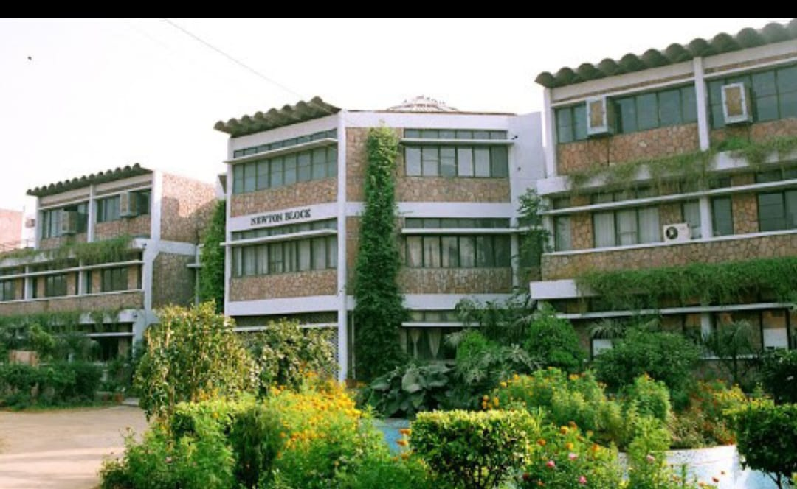

Our Globle Campus
Here our all campus.

Turari

Shitoli
.jpeg)
It offers various courses under various specialisations. The university offers various programs at the undergraduate, postgraduate, and research levels. Below are the institutions of ITM University:
ITM University is a multidisciplinary private university [2] based in Gwalior, India. The subjects are offered in the field of sciences, engineering, management, fine arts, social sciences, arts, and nursing. It was established under the Act of State Legislature Madhya Pradesh and is notified in the Official Gazette (extraordinary) of the State Government.
ITM University Gwalior you get an opportunity to link your studies to your career plan and personal goals by using combination of compulsory credits, optional credits, self-learning credits, MOOC, non-cgpa credits for curricular and extra-curricular activities. Here you get enormous opportunity to share your ideas and domain expertise with industry leaders. Technically you can craft your own degree
ITM University offers various diploma and PG diploma courses in various disciplines. Admission to PG Diploma and diploma courses is granted on the basis of valid scores in ITM-NEST. More details related to ITM University admission to diploma and PG diploma are tabulated below:
Here our all campus.
this university provide naad fecilities.
Akshardham Central Library occupies a place of pride in ITM Gwalior and is an essential component of the Institute's outstanding research and education mission. It serves as a creative and innovative partner in supporting teaching, learning, and research activities of the Institute. The pleasant ambience and the well-furnished library with spacious reading rooms create an atmosphere of serenity. It is the most lively place on the campus providing a conducive environment that enables learning and advancement of knowledge and promotes discovery
ITM University is a multidisciplinary private university [2] based in Gwalior, India. The subjects are offered in the field of sciences, engineering, management, fine arts, social sciences, arts, and nursing. It was established under the Act of State Legislature Madhya Pradesh and is notified in the Official Gazette (extraordinary) of the State Government..
ITM University is a multidisciplinary private university [2] based in Gwalior, India. The subjects are offered in the field of sciences, engineering, management, fine arts, social sciences, arts, and nursing. It was established under the Act of State Legislature Madhya Pradesh and is notified in the Official Gazette (extraordinary) of the State Government..
Rating and reviews given by our students.
It is a awesome campus
ITM university is the best university in the india